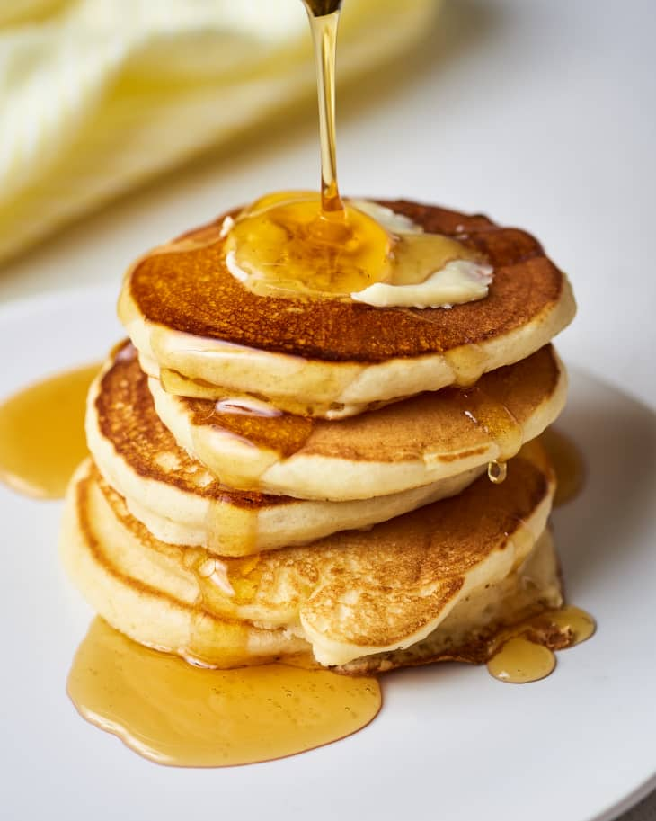

Pancake Recipe

Description
This simple recipe makes pancakes that are light, fluffy and tasty. You just need a couple of basic ingredients that you most likely have in your kitchen at this moment.
Ingredients
- 2 cups of floor
- 2 tablespons of sugar
- 2 teaspoons of baking powder
- 1/2 teaspoon of salt
- 2 cups of milk
- 2 eggs
Steps
- Add the dry ingredients in a large bowl and whisk to combine.
- Add the wet ingredients into the dry mixture and whisk until the batter is almost smooth.
- After letting the batter rest for 10 minutes, heat a large cast iron.
- Add a teaspoon of vegetable oil to the pan and swirl. Add 2 tablespoons of the batter to the batter. Cook 3 at a time, making sure to cook each side for 3 minutes.